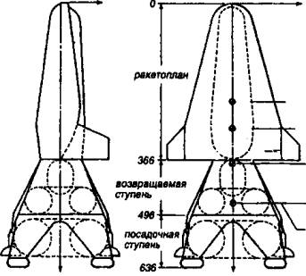

Лунные поселения
И все-таки конструкторы — такой народ, что их запросто не остановишь. Уже понимая, что их идеи вряд ли будут реализованы, и советские, и американские инженеры все-таки создали несколько проектов лунных поселений, в которых колонисты могли бы обитать месяцами, а то и годами. Давайте вспомним хотя бы о некоторых из них. Кто знает, быть может, заложенные в них идеи еще пригодятся в будущем?
ЯНКИ НА ЛУНЕ. Один из первых серьезных проектов постоянной обитаемой базы на Луне был рожден в недрах ВВС США. Называлась эта программа «Горизонт» и, кроме всего прочего, предусматривала размещение на естественном спутнике Земли неких стратегических систем, которые будут способны в случае необходимости бомбардировать цели на нашей планете.

Схема лунного корабля «Лунэкс».
Первоначальная концепция программы была разработана еще в апреле 1960 года Управлением баллистических ракет ВВС США на основе инициативных проектных разработок, выполненных специалистами ведущих американских авиационно-космических корпораций «Боинг», «Норт Америкен», «Дуглас», «Рипаблик» и других.
Причем авторы уже тогда не расценивали своего проекта как далекую от реализации техническую фантазию. Они обосновывали возможные сроки решения основных технических проблем, оценивали необходимые ассигнования и обозначали пять основных этапов внедрения программы:
1. Первый привоз на Землю образцов лунного грунта — ноябрь 1964 года.
2. Высадка на Луне и возвращение экипажа на Землю — август 2967 года.
3. Временная база на лунной поверхности (на 12 человек) — ноябрь 1967 года.
4. Завершение строительства лунной базы (на 21 человека) — декабрь 1968 года.
5. Ввод базы в постоянную эксплуатацию — июнь 1969 года.
В качестве основного носителя авторы программы рассматривали ракеты «Сатурн-I» и «Сатурн-II». Причем к концу 1964 года планировалось осуществить не менее 72 запусков ракет серии «Сатурн», 40 из которых нацеливались на реализацию задач программы «Горизонт». Дальнейшее развитие программы требовало запусков еще 61 ракеты «Сатурн-I» и 88 ракет «Сатурн-II».
Благодаря этим запускам до ноября 1966 года на Луну было бы доставлено свыше 220 т грузов. И можно было бы начать строительство. Для этого сначала на Луну предполагалось высадить двух астронавтов-разведчиков, а затем и отряд строителей-монтажников из 9 человек.
В итоге их деятельности уже через полгода на Луне должна была появиться временная база, основным элементом которой стал бы цилиндрический герметизируемый контейнер диаметром 3 м и длиной 6 м. Эти контейнеры укладываются в ров глубиной в 3,5 м, соединяются герметичными тамбурами и засыпаются лунным грунтом для лучшей теплоизоляции и защиты как от ударов метеоритов, так и от возможных атак противника.
Энергией базу должны были обеспечить два ядерных реактора, а связь с Землей должны были обеспечивать пятиступенчатые пилотируемые аппараты с двигателями на химическом топливе, способные выполнять «прямые перелеты» на Луну и базировавшиеся на местном космодроме.
Поодаль как от жилого комплекса, так и от энергетического центра с космодромом должны были располагаться опять-таки заглубленные в почву стартовые площади боевых ракет, нацеленных на Землю.
Причем, по мнению, например, подполковника Сингера, работавшего в Центре специальных вооружений ВВС США, топографические характеристики Луны, наличие на ее поверхности многочисленных кратеров и трещин позволят легко выбрать места для размещения ракетных баз и не потребуют большого объема строительных работ.
Общая стоимость программы «Горизонт», по оценке экспертов ВВС, должна была составить около 6 млрд долларов.
ЛУННАЯ КОЛОНИЯ «АПОЛЛОНА». Программа «Горизонт» так и не была принята к разработке. Но это вовсе не значит, что американцы отказались от самой идеи создания лунной базы. По программе-максимум и программу «Аполлон» намечалось завершить строительством обитаемой станции на окололунной орбите в 1978–1980 годах. А чуть позднее, в начале 80-х годов XX века построить и постоянную базу на поверхности Луны.
Однако и эти проекты оказались не выполненными.
Затем специалисты США еще несколько раз пытались реанимировать подобные проекты. Например, существовал проект строительства научной базы на Луне, в состав которой должны были войти сразу 4 станции: две в кратере Гримальди, одна на обратной стороне Луны и еще одна на Южном полюсе.
Вполне может быть, что к одному из этих проектов когда-нибудь вернутся. Ведь Луна, по мнению многих специалистов, является, например, идеальным местом для наблюдений за дальним космосом.
БАЗА «ЗВЕЗДА». В нашей стране тоже разрабатывались различные проекты лунных баз. Один из проектов, например, принадлежит известному нашему специалисту в области машиностроения и космической техники академику В. П. Бармину. Интересно, что свою разработку специалисты ГСКБ «Спецмаш», которым руководил Бармин, начали в 1962 году с благословения С. П. Королева.
За десять с липшим лет проектировщики Бармина создали весьма проработанный в деталях проект, который в документах ГСКБ «Спецмаш» проходил под обозначением ДЛБ («Долговременная лунная база»), или проект «Звезда».
Предполагалось, что место для базы будет выбрано с использованием орбитального спутника Луны. Затем беспилотная станция возьмет пробы грунта и доставит их на Землю. После этого район будущего строительства обследуют луноходы. И лишь затем на место будущего строительства отправится экспедиция из четырех человек на «лунном поезде».
В состав этого своеобразного транспортного комплекса входили: тягач, жилой вагончик, изотопная энергоустановка мощностью 10 кВт и буровая установка. Причем ходовая часть каждого отсека была выполнена по принципу — мотор-колесо. То есть, как у луноходов, каждое колесо имело свой электромотор, благодаря чему отказ одного или даже нескольких из 22 моторов практически не сказывался на подвижности всего «поезда».
Для метеорной, тепловой и ультрафиолетовой защиты обитаемых помещений «поезда» был разработан трехслойный корпус. Сверху и изнутри — стенки из специальных сплавов, между ними — подушка из вспененного наполнителя. Полный вес «лунного поезда» составлял 8 т.
Найдя наиболее подходящее место для постоянной базы, члены экипажа поезда должны были вызвать транспортные ракеты с оборудованием для монтажа комплекса на 12 человек. Первоначально она должна была состоять из девяти типовых блоков цилиндрической формы. Габариты блока: длина — 8,6 м, диаметр — 3,3 м, полная масса — 8 т. Каждый блок имел свое назначение: командный пункт, научная лаборатория, медпункт со спортзалом, камбуз со столовой, жилые помещения, мастерские, склады и т. д.
Кстати, опытный образец одного из таких блоков использовался в 1967 году во время экспериментов по длительному пребыванию в замкнутой среде в Институте медико-биологических проблем. Однако проекта в полном объеме, требовавшего для своего осуществления 50 млрд тогдашних рублей (или 80 млрд долларов), советская экономика не потянула. И его отложили до лучших времен.
ПРОЕКТ НПО «ЭНЕРГИЯ». Не остался в стороне от этой темы и академик В. П. Глушко. Вслед за своим проектом осуществления лунной экспедиции он 70-е годы XX века выдвинул и концепцию создания многоцелевой лунной базы.
Причем в отличие от других разработчиков Валентин Петрович акцентировал внимание на максимальном использовании при строительстве и эксплуатации такой базы местных ресурсов. Он полагал, что на Луне может быть развернуто целое производство, которое сможет обеспечить, например, заправку и ремонт кораблей дальнего космического поиска. И эта идея, похоже, и по сей день не потеряла своей актуальности.
ТЕРМОЯД НА ЛУНЕ. Недавняя речь нынешнего Президента США Джорджа Буша-младшего в штаб-квартире НАСА, где он объявил о планах колонизации Луны и Марса, заинтересовала как общественность, так и специалистов. Причем профессионалы в отличие от любителей услышали в словах Буша и то, о чем он, вероятно, и не хотел бы распространяться пока публично: план колонизации Луны — не столько космическая, сколько экономическая программа.
Именно на этот аспект обратил внимание присутствующих на одном из недавних заседаний Президиума Российской академии наук директор Института геохимии и аналитической химии РАН академик Эрик Михайлович Галимов.
Пессимисты уже сегодня говорят о том, что через 20–30 лет запасов нефти и газа человечеству перестанет хватать, сказал академик. Оптимисты называют срок в 50-100 лет. Тем не менее и те и другие сходятся во мнении, что людям пора искать иные источники энергии, чем газ, нефть, уголь и прочие полезные ископаемые.
Всевозможные ветряки, солнечные батареи, геотермальные источники — это пока экзотика, даже все вместе они покрывают не более 1 % мирового энергопотребления [3].
Полвека назад большие надежды связывались с атомной энергетикой. Но уже сегодня понятно, что и с ядерными отходами хлопот не оберешься.
Остается термоядерная энергия. Впервые идея создания термоядерного реактора была публично высказана И. В. Курчатовым в 1956 году. Однако с той поры прошло почти полвека, а воз и ныне там — дело не продвинулось дальше создания экспериментальных установок.
Правда, ныне международный проект термоядерного реактора ИТЭР, в котором участвует и Россия, дошел уже до стадии определения площадки для строительства экспериментальной установки. Вероятнее всего, в конкурсе победит Франция.
Но Соединенные Штаты, самый богатый участник проекта, вышли из проекта ИТЭР. В США считают, что построят термоядерный реактор своими силами быстрее, чем вместе со всем миром.
Кроме того, возникли разногласия по поводу того, какой именно термоядерный реактор строить. Дело в том, что большинство специалистов предполагают, что в качестве топлива в таком реакторе надо использовать изотопы водорода — дейтерий и тритий, которых достаточно много в воде Мирового океана.
Однако, во-первых, из Мирового океана добыть изотопы не многим проще, чем уран из урановой руды. Во-вторых, циклы на основе дейтерия приводят к излучению потоков нейтронов. Они глубоко проникают в окружающие реактор конструкции, создавая наведенную радиоактивность, которая затем сохраняется долгие годы. Стало быть, как и в случае с атомными «котлами», возникает проблема избавления от отслуживших свой срок конструкций, которые продолжают «фонить» сотни и даже тысячи лет.
Поэтому в последние годы все большее количество специалистов обращают свои взоры на термоядерные реакции с участием гелия-3. Этот изотоп позволяет получить поток протонов, которые не дают наведенной радиоактивности, а стало быть, нет и проблемы с радиоактивными отходами.
Застрельщиком в этом деле, в частности, выступает Висконсинский университет, США. Там есть экспериментальная установка и уже получен поток протонов, свидетельствующий о том, что реакция, в принципе, осуществима.
Причем человечество накопило уже определенный опыт в работе с термоядерными установками. И дальше дела должны пойти куда быстрее. На что раньше требовалось полвека, ныне может быть освоено всего за 5-10 лет.
Однако есть тут и свои сложности. Гелия-3 на нашей планете очень мало. Его, конечно, хватит, чтобы провести экспериментальные работы. Но вот о промышленном производстве энергии на основе гелия можно будет говорить лишь в том случае, если мы сможем привозить гелий-3 с… Луны.
Его там в отличие от Земли содержится огромное количество в лунном грунте — реголите. Нам же для энергетики потребуется, кстати, не так уж много гелия-3. Расчеты показывают, что в год достаточно будет доставлять около 20 т гелия, чтобы с лихвой обеспечить все энергетические потребности Земли. А для этого вполне достаточно пары рейсов такого космического корабля, как «Шаттл».
Однако, чтобы возить с Луны не сырье — лунный грунт, — а уже сам концентрат, на Луне придется создать инфраструктуру для переработки сырья и получения готового продукта. Причем производство это нужно будет налаживать заранее, а не в тот момент, когда возникнет острая необходимость в получении гелия-3 в промышленных объемах.
Стало быть, предварительно придется решить еще множество задач. Нужно будет восстановить технологию и оборудование для полетов на Луну, построить там постоянно действующую колонию, отработать саму технологию добычи и переработки гелия, его сжижения, выделения из него изотопа гелия-3, который занимает всего-навсего тысячную долю от общего объема, создать для этого соответствующую промышленную инфраструктуру…
В общем, проблем немало, и за ближайшие лет 10–20 их не решить. Правда, особых научных трудностей на этом пути не видно. Технологии все известны уже в настоящее время. Их нужно будет лишь воспроизвести на Луне в промышленных масштабах. Хотя это хлопотно, дорого, но вполне осуществимо.
Американцы говорят, что они собираются вернуться на Луну уже в ближайшее время. Значит, и нам стоило бы поторопиться. В принципе, нам тоже не придется начинать решать эту проблему с нуля. Мы тоже достаточно подготовлены, способны отправить аппарат на Луну за значительно меньшие деньги, чем это в свое время сделали американцы. Стоимость такого полета в настоящее время колеблется где-то в пределах 20–30 млн. долларов — не такая уж большая сумма даже для российской экономики.
Тем не менее, вероятно, логичнее всего продвигать этот проект международными усилиями, с участием американских, российских, китайских, европейских, индийских, японских специалистов. В общем, всем миром.
Но как будет на самом деле? Прежде всего это вопрос к политикам, а не к ученым и инженерам. У специалистов всегда есть желание сотрудничать, поделить проблему на части и решать ее сообща.